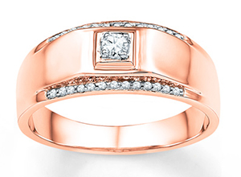
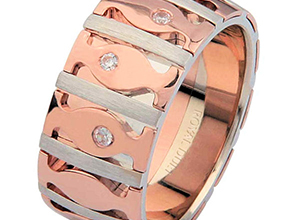

Jewellery.PH started when it first joined as a short-term exhibit store at Robinson's Galleria's trade exhibit in 2016, the growing demand triggered the establishment of Jewellery Group International Corp., then a manufacturing firm to support Jewellery.PH. Jewellery.PH fuses fashion polished 925 sterling silver, it caters to men, women and teenagers who love and breathe fashion and are in tune with the latest trends. The company has a team of in-house designers who travel regularly to keep abreast of the latest fashion trends. This is why the jewelry reflects only good taste in terms of design, quality and image. Jewellery.PH challenge itself to live up to its customers expectations, up to date trends with value for money. By December 2016, Jewellery.PH launched another line of product "Timepiece". It also provides stylish and fashionable watches for people on the go. What sets Jewellery.PH from other retailers is that it maintains and boasts of Merchandise and Marketing efforts that are in line with the company's ideals and vision. Management keep open lines of communication and has high regard for every team member ideas and suggestions. The company believes that each member of the company is capable and competent to produce ideas that can uplift the standards of the company and its products. Jewellery.PH is determined to be the Philippines number one in Silver Jewelry and Fashion Watch accessories. The goal is to capture a bigger share of the growing retail market by expanding the distribution network in and out of the Philippines and to become lifestyle store through expansion of the product line.
Jewellery.PH consists of small decorative items worn for personal adornment, such as brooches, rings, necklaces, and earrings. Jewellery may be attached to the body or the clothes, and the term is restricted to durable ornaments, excluding flowers for example. For many centuries metal, often combined with gemstones, has been the normal material for jewellery, but other materials such as shells and other plant materials may be used. It is one of the oldest type of archaeological artefact – with 100,000-year-old beads made from Nassarius shells thought to be the oldest known jewellery. The basic forms of jewellery vary between cultures but are often extremely long-lived; in European cultures the most common forms of jewellery listed above have persisted since ancient times, while other forms such as adornments for the nose or ankle, important in other cultures, are much less common. Historically, the most widespread influence on jewellery in terms of design and style have come from Asia.
First Class Wedding Ring: The Chocolate Diamonds Wedding Ring
Men's Wedding Bands: Rose Gold Wedding Bands
Men's Rustic Style: Rose Gold Mens Wedding Bands